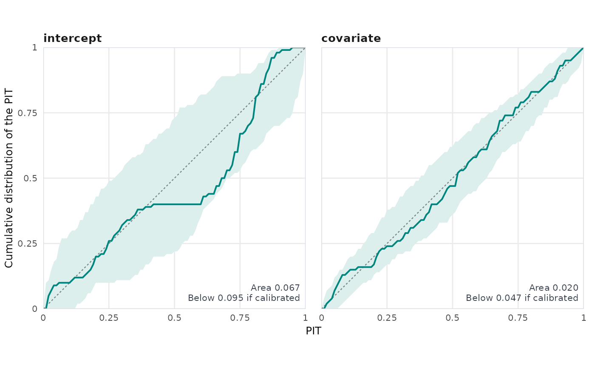

Compares the predictions of one or more models with observations left out of the data. Each test set is predicted from its training set, and every test observation is scored against its predictive distribution.
Scoring rules, the continuous ranked probability score (CRPS) and the scaled CRPS (SCRPS) of Bolin and Wallin (2023), measure the sharpness and the calibration of the predictive distributions together. Both are losses, so lower values are better.
Calibration is assessed with the probability integral transform (PIT) of Gaussian outcomes and its nonrandomised version for counts, through the area between the calibration curve and the identity line (Giorgi et al. 2026).
Usage
assess_prediction(
models,
test_sets,
refit = FALSE,
control_mcmc = set_control_mcmc(),
seed = NULL,
messages = getOption("RiskMap.messages", TRUE),
...
)Arguments
- models
A fit from
glgpm(), or a list of fits to the same data. The names of the list name the models in the results.- test_sets
The test sets, from
create_test_sets(), or a list with one element for each test set, the row numbers of its test observations or a list of the training rows,train, and the test rows,test.- refit
Logical, whether the parameters are estimated again in each training set. If
FALSE(the default), they are fixed at the estimates from all the data, and only the predictions are conditioned on the training set. See Details.- control_mcmc
Control settings of the predictive draws, from
set_control_mcmc().- seed
Optional non-negative integer that makes the assessment reproducible. It sets a seed for each test set, which is passed to
glgpm()when the models are refitted and to predict(). All models share the seed of a test set, so that their predictions use common random numbers. The caller's random number state is restored on exit. WhenNULL(the default), the seeds are drawn from the session's random number generator.- messages
Logical, whether to report on the assessment, with a progress bar and a step for the simulation of each model's calibration, as described in riskmap_progress. Defaults to the option
RiskMap.messages, orTRUEif it is not set.- ...
Not used, and an error if given, so that a misspelt or former argument such as
methodis not ignored.
Value
A list of class RiskMap_cross_validation, containing
- scores
A data frame with one row for each model and test observation.
model,test_setandrowidentify it, withrowthe row of the data,CRPSandSCRPSare its scores, andpit_lowerandpit_upperare its predictive distribution function just below the observation and at the observation, which are equal for Gaussian models.- calibration
A list with
area, a data frame with one row for each model, itsPIT_area,PIT_area_expectedandPIT_area_limit,curves, a data frame with the calibration curve of each model and the 95% joint band of a correct model (lowerandupper) at probability levelsu, andsimulated, the simulated curves the band comes from, a matrix for each model with a row for each simulation and a column for each levelu.- test_sets
The test sets, of class
RiskMap_test_sets.- refit
The value of
refit.- family
The family of each model.
- failures
A data frame with one row for each model and test set whose refit, prediction or scores failed, with columns
model,test_setandmessage. The scores of these test sets areNA.
Fixed and refitted parameters
Fixed parameters, the default, suit a check of the calibration of a model. The reference of a correct model (see "How to read the area") repeats the same procedure, with the covariance parameters of its working model estimated from all the observations of each simulated dataset, so the area of the data is judged against areas found in the same way. They are also much faster.
To compare models by their scores, use refit = TRUE. With fixed
parameters the test observations have helped to estimate each model, so
its scores are optimistic, and more so for a model with more parameters.
The comparison then favours the model with more parameters, and more so
when the test sets are spatial clusters. A refit costs one fit for each
test set and model, and it can fail when a training set is too small for
a model, which leaves the scores of that test set missing (see
"Failures").
Predictive distributions
The observations of a test set are predicted jointly, with the nugget and the random effects when the model has them. A random effect has its distribution given the training data, and a level that the training data don't have is drawn from the distribution of the random effect. The scores of an observation are those of its own predictive distribution. Test observations with missing values in a variable used by any of the models are left out.
The memory of a test set grows with the square of its number of locations and the time of its joint draws with the cube, so large datasets are better divided into more test sets.
For a Gaussian model, the predictive distribution is Gaussian, with the mean and the standard deviation of the draws, which include the measurement error. The predictive distribution of a binomial, Poisson or negative binomial count \(Y\) is the distribution of the family given the mean, averaged over the \(J\) draws of the mean from its own predictive distribution, $$F(k) = \frac{1}{J} \sum_{j=1}^{J} P(Y \le k \mid \mu_j), \quad k = 0, 1, 2, \ldots$$ Here \(\mu_j\) is the \(j\)th draw of the prevalence or rate, and \(P(Y \le k \mid \mu_j)\) also depends on the denominator and, for a negative binomial model, on its size.
Scores
Every score is a loss, so lower values are better. The CRPS is in the units of the response, which for binomial, Poisson and negative binomial models are counts (for example numbers of positive individuals), not prevalences or rates. The SCRPS is reported as $$\frac{1}{2}\left[1 + \frac{\mathrm{CRPS}(F, y)}{c} + \log(2c)\right], \quad c = \frac{1}{2} E|X - X'|,$$ with \(X\) and \(X'\) independent draws from the predictive distribution \(F\). This is the negative of the scaled CRPS of Bolin and Wallin (2023), whose scores are higher for better predictions, so that the CRPS and the SCRPS share one orientation. The SCRPS can be negative.
For counts,
$$\mathrm{CRPS}(F, y) = \sum_{k \ge 0} [F(k) - 1(k \ge y)]^2, \quad
c = \sum_{k \ge 0} F(k) [1 - F(k)].$$
The scores of counts have no random step beyond the draws of the mean, as
no counts are simulated for them. A model therefore gets the same scores
whatever its position in models. Where counts above 100 are predicted,
\(F\) is computed on a grid of counts and is linear in between. The grid
is fine enough for a relative error of about \(10^{-4}\) or less in the
CRPS and in \(c\).
Calibration
The calibration curve of \(n\) test observations is
$$\frac{1}{n} \sum_{i=1}^{n} G_i(u), \quad 0 \le u \le 1.$$
For a Gaussian outcome, \(G_i(u)\) is 1 if \(F_i(y_i) \le u\) and 0
otherwise, so the curve is the empirical distribution function of the PIT
values. For a count it is the average nonrandomised PIT (AnPIT), with
\(G_i(u)\) equal to 0 up to \(F_i(y_i - 1)\), to 1 from
\(F_i(y_i)\), and linear in between (Czado et al. 2009). PIT_area is
the area between the curve and the identity line, from 0 for a perfectly
calibrated curve to at most 0.5.
How to read the area
The area of a correct model is not zero, because its observations are finite in number, because neighbouring test observations are above or below their predictions together, and because the parameters are estimated from the same data. Its distribution is found by simulation.
999 datasets are simulated from a Gaussian working model of the fit. It has the linear predictor of the model, with its spatial correlation, nugget and random effects, observed with the measurement error of a Gaussian model. For counts each observation has instead a Gaussian error whose variance makes it about as informative about the linear predictor as the count is.
In each dataset the covariance parameters of the working model are estimated again, from all its observations, or from each training set when
refit = TRUE, and the test observations are predicted from their training sets, as for the data. This gives each test observation a PIT value. For counts, it is turned into a count by the predictive distribution of the data at that observation.Each dataset gives a calibration curve and an area, computed as for the data.
PIT_area_expectedis the mean of these areas, andPIT_area_limitthe value that 95% of them are below. The band ofplot_cross_validation()is the joint envelope of the curves, computed as invariogram(), which the whole curve of a correct model is inside with a probability of 95%.
An area below PIT_area_limit is one that a correct model would give, and an
area above it points to miscalibration. Below the limit, a smaller area, or
one closer to PIT_area_expected, doesn't mean a better model. It mostly
reflects chance, the number of observations and the dependence between them,
so the areas of models shouldn't be ranked. The CRPS and the SCRPS are for
comparing models. The area is also not sensitive to every departure. Too many
observations in both tails change it little, and the curve and the histogram
of plot_cross_validation() show them. Nor does it find a departure that
the estimated parameters make up for, such as a missing covariate or
nugget. The scores compare such models.
The simulated datasets go through the same cross-validation as the data, with
their parameters estimated again, so the area of a correct model is above
PIT_area_limit in about one dataset in twenty. When the test sets are a few
spatial clusters, it is above the limit, or its curve outside the band,
somewhat more often. The time of the simulation grows about with the cube of
the number of observations and its memory with the square, so with a few
thousand observations it takes minutes for each model, and with many
thousands much longer.
For binary outcomes, with a single trial in each test observation, the
area, its limit and the band almost never point to miscalibration, even for
a wrong model and with any kind of test sets. They are not a check of
calibration there. A binomial model whose scored test observations all have
one trial, as with individual-level data that have several observations at
one location, is therefore treated apart. assess_prediction() says so, and
plot_cross_validation(), the print of the result and of its summary(),
and to_table() show its curve and its area without the band or the limit,
with a short note on why. The result and the summary still have them. In an assessment of several models this applies
to each such model on its own. The CRPS of a binary outcome is the Brier
score \((p - y)^2\) of the predictive probability \(p\) that
\(y = 1\), and the scores still compare models.
Failures
A failed refit or prediction does not stop the assessment. The scores of that test set are missing and a warning reports the failures. So are those of a test set of counts that can't be scored, because a draw of the mean is not finite, is outside the range of the family or gives counts above \(2^{53}\), or because a binomial denominator is not a whole number.
References
Bolin, D., & Wallin, J. (2023). Local scale invariance and robustness of proper scoring rules. Statistical Science, 38(1), 140–159. doi:10.1214/22-STS864 .
Czado, C., Gneiting, T., & Held, L. (2009). Predictive model assessment for count data. Biometrics, 65(4), 1254–1261. doi:10.1111/j.1541-0420.2009.01191.x .
Giorgi, E., Fronterre, C. & Diggle, P. J. (2026). A decay-adjusted spatio-temporal model to account for the impact of mass drug administration on neglected tropical disease prevalence. Journal of the Royal Statistical Society Series A: Statistics in Society.doi:10.1093/jrsssa/qnag100 .
See also
create_test_sets() makes the test sets. The methods for a
cross-validation are print(),
summary(), to_table() and
plot_cross_validation(), which plot() of the result also calls.
assessment says which function answers which question about a model.
Examples
data(italy_sim)
example_data <- italy_sim[1:100, ]
fit <- glgpm(y ~ gp(), data = example_data, family = "gaussian",
messages = FALSE)
covariate_fit <- glgpm(y ~ log(pop_dens) + gp(), data = example_data,
family = "gaussian", messages = FALSE)
test_sets <- create_test_sets(example_data, method = "cluster",
n_sets = 5, seed = 1)
result <- assess_prediction(
list(intercept = fit, covariate = covariate_fit),
test_sets,
seed = 1
)
#> ℹ Parameters are fixed at the estimates from all the data.
#> ℹ Set `refit = TRUE` to re-estimate them in each training set.
#> ! The models have different numbers of parameters. With fixed parameters the
#> comparison tends to favour the model with more of them, so `refit = TRUE` is
#> recommended.
summary(result, reference = "intercept")
#> ── Cross-validation scores ─────────────────────────────────────────────────────
#> Parameters are fixed at the estimates from all the data.
#>
#> Scores over 100 test observations
#> Model CRPS CRPS difference SCRPS SCRPS difference PIT area Limit
#> intercept 1.2588 1.4610 0.0669 0.0950
#> covariate 0.4087 -0.8501 (0.0694) 0.8992 -0.5618 (0.0380) 0.0199 0.0472
#> ℹ Lower is better for the CRPS and the SCRPS. The CRPS is in the units of the
#> response.
#> ℹ The PIT area of a correct model is below the limit with a probability of 95%.
#> ℹ Differences are from intercept, and negative ones are in favour of the other
#> model. Their standard errors, in brackets, treat the observations as
#> independent.
plot_cross_validation(result)

# Test sets given as rows of the data
result <- assess_prediction(fit, list(1:50, 51:100), seed = 1)
#> ℹ Parameters are fixed at the estimates from all the data.
#> ℹ Set `refit = TRUE` to re-estimate them in each training set.
summary(result)
#> ── Cross-validation scores ─────────────────────────────────────────────────────
#> Parameters are fixed at the estimates from all the data.
#>
#> Scores over 100 test observations
#> Model CRPS SCRPS PIT area Limit
#> Model 1 1.2660 1.4532 0.0511 0.0849
#> ℹ Lower is better for the CRPS and the SCRPS. The CRPS is in the units of the
#> response.
#> ℹ The PIT area of a correct model is below the limit with a probability of 95%.